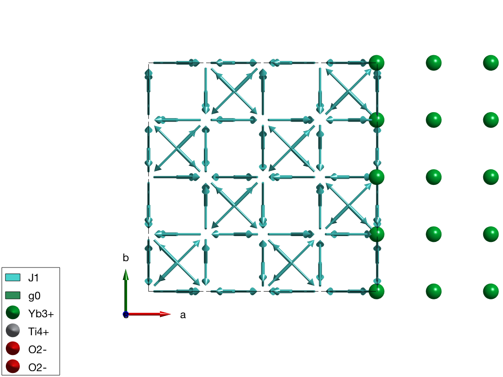
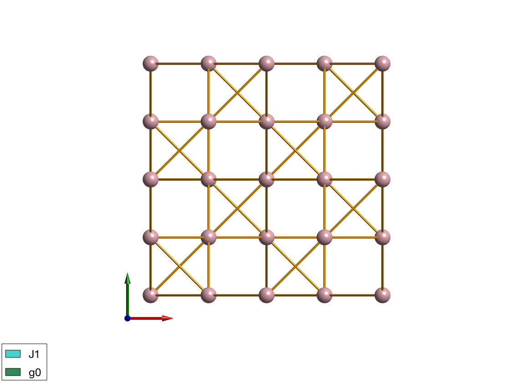
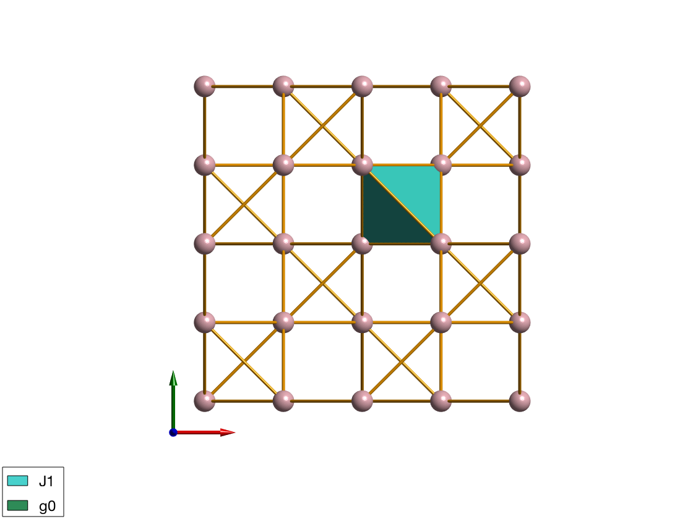

Contents
We use a complex model to customize
We don't care what is this model, we just test the plotting capabilities of SpinW.
symStr = '-z, y+3/4, x+3/4; z+3/4, -y, x+3/4; z+3/4, y+3/4, -x; y+3/4, x+3/4, -z; x+3/4, -z, y+3/4; -z, x+3/4, y+3/4'; model = spinw; a = 10.0307; model.genlattice('lat_const',[a a a],'angled',[90 90 90],'spgr',symStr,'label','F d -3 m Z') model.addatom('label','Yb3+','r',[1/2 1/2 1/2],'S',1/2) model.addatom('label','Ti4+','r',[0 0 0]) model.addatom('label','O2-','r',[0.3318 1/8 1/8]) model.addatom('label','O2-','r',[3/8 3/8 3/8]) model.gencoupling model.addmatrix('label','J1','value',1) model.addmatrix('label','g0','value',1); model.addcoupling('mat','J1','bond',1) model.addg('g0') model.matrix.mat(:,:,2) = -0.84*ones(3)+4.32*eye(3); model.getmatrix('mat','J1'); J1 = -0.09; J2 = -0.22; J3 = -0.29; J4 = 0.01; model.setmatrix('mat','J1','pref',[J1 J3 J2 -J4]);
The symmetry analysis of the coupling between atom 1 and atom 2:
lattice translation vector: [0,0,0]
distance: 3.546 Angstrom
center of bond (in lattice units): [0.500,0.375,0.375]
label of the assigned matrix: 'J1'
allowed elements in the symmetric matrix:
S = | C| 0| 0|
| 0| A| B|
| 0| B| A|
allowed components of the Dzyaloshinskii-Moriya vector:
D = [ 0 , D1,-D1]
Customizing the plot 1.
We setup the number of triangular faces to be produced by the plot command using swpref. Each atom is an icosahedron, where each face is subdivided into triangles nmesh-times (see swplot.icomesh function). Thus nmnesh=3 will make all sphere to have 1280 faces. npatch determines the number of subdivision of the circle that is used to generate cylinders an arrows (swplot.arrow and swplot.cylinder).
swpref.setpref('nmesh',3,'npatch',50) % The high level spinw.plot command calls lower level commands % (swplot.plotatom, swplot.plotion, swplot.plotbond, etc). For details % check the documentation of spinw.plot or any of the lower level % functions. Any option of the lower level functions can be controlled by % making new options as: lowlevelfunname + lowlevelfunoption, for example % to set the color option of the swplot.plotatom function set 'atomColor' % option in the spinw.plot method as in the example below. The low level % functions can be also called separately. plot(model,'tooltip',false,'atomMode','mag','atomColor','gold') % Move the atoms by shifting positions by 10 Angstrom to the right. swplot.plotatom('shift',[10 0 0]','mode','mag','replace',true)
Customizing the plot 2.
We show only the bonds and the atoms and changing colors.
model.plot('atomMode','mag','bondMode','cylinder',... 'bondLinewidth0',3,'bondColor','orange','bondMode2','none',... 'atomColor','pink','legend',false,'baseLabel',false,... 'cellMode','none','tooltip',true)
Warning: Invalid input option names: legend!
Overplotting a polyhedron
We overplot a tetrahedron between 4 magnetic atoms. The positions are in lattice units. Also Angstrom can be used by setting the 'unit' option of swplot.plot function to 'xyz'.
R =[1/2 3/4 3/4;... 1/2 1/2 1/2;... 3/4 3/4 1/2;... 3/4 1/2 3/4]; swplot.plot('type','polyhedron','position',permute(R,[2 3 1]))